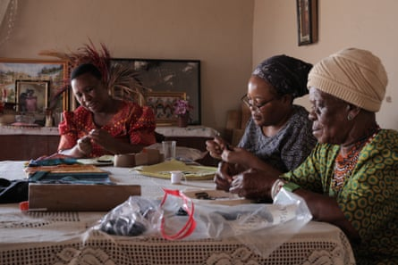
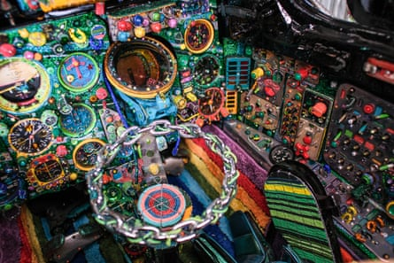

Most retired planes settle for an afterlife at a boneyard or disassembly facility. A defunct MiG-21 fighter jet that recently arrived at Seattle’s Museum of Flight is not most planes.
While many decommissioned vessels collect rust, the Soviet-designed aircraft is blanketed from top to bottom, inside and out, in tens of millions of glass beads that explode in a riot of color.
Titled The MiG-21 Project , the work belongs to South African artist and filmmaker Ralph Ziman, and stands out among heavyweights like the Dreamliner and the McDonnell Douglas DC-9 on display at the museum’s colossal exhibition site. The vessel’s sharp silhouette is softened by the beadwork’s geometric patterns and shiny finish, which outfit every part of the small-yet-ferocious aluminum body and cockpit of the plane, except for the nose cone and afterburner.
Ziman has spent the last 12 years covering decommissioned weapons of war such as AK-47 assault rifles with brightly hued beads for his project titled Weapons of Mass Production. The kaleidoscopic airplane, Ziman’s final work in the series, is the result of a five-year collaboration between the artist and roughly 100 craftspeople based in Johannesburg.
Ndebele artisans Sophie Masombuka, Thenjiwe Pretty Chinedo and Poulinah Mahlangu from Anointed Hands working on beaded panels for the MiG-21 Project.Photograph: Nic Hofmeyr
The jet found Ziman through a logistical partner who informed him about a group of Polish air force MiGs left to rot in a Florida warehouse. “They often use these jets for stress-testing the pilots but this one didn’t have any combat record, so the US military contractor decided they wouldn’t use them,” he says. Ziman, who was already in search of the right jet to dress in beads, couldn’t let this one wallow on the runway any longer. “It was being rained on for I don’t know how many years,” says the artist about his cold war-era find, which he shipped cross-country on a flatbed truck to his Los Angeles studio in 2019.
Around 12,000 MiG-21 jets were produced during its 70-year history, making it one of the most-used fighter jets of the 20th century. They are in fact still in service in countries such as India and Pakistan. The warplane played a grim role in combat, from 1967’s six-day war in the Middle East to the Croatian war of independence in the 90s. Ziman’s urge to repurpose military gear was fueled by more recent uproars, particularly the Black Lives Matter protests. Seeing white cops in the US sitting on Casspirs, he says, referencing a commonly used police vehicle in South Africa, especially in the 1980s and the 90s, “made me go out and talk about militarization of police forces even more”.
Long fascinated by airplanes as well as Afrofuturism, Ziman says his project reflects his trust in beauty to initiate conversation about heavy topics.

Ralph Ziman.Photograph: Simone Niamani
“When you cover a weapon or a warplane with beads, the public, especially young people, can see them with a new perspective and become interested in talking about what they actually mean,” he says.
The aircraft’s role in South African apartheid particularly intrigued the 62-year-old. During the Angolan civil war in 1976, Cuba – which had made a pact with the MPLA (the People’s Movement for the Liberation of Angola) – gained the upper hand through a group of MiG planes gifted by Russia. As a result, South Africa, which supported the opponent Unita (the National Union for the Total Independence of Angola), withdrew from the war. The MPLA’s victory prompted South Africa to reconsider its position on the continent, helping to hasten the end of apartheid. “I have always been amazed by this parallel,” adds Ziman.
The eye-catching geometric emblems reflect craft traditions across the African continent, particularly in Zimbabwe and South Africa’s Mpumalanga province, where Ziman’s collaborators hail from. Ziman, however, omitted any direct reference to a singular regional ornament tradition such as Zulu or Ndebele, and rather opted for what he calls an “eclectic pan-African feel”. The overall effect is one of communal celebration of the motifs commonly seen across the continent in beads, murals and paintings.
The intercontinental project was both laborious and logistically challenging, requiring Ziman’s team in Los Angeles to send casts of the plane’s parts, such as the leading edge of the wing or the rivets, to Johannesburg as templates for the craftspeople to weave their motifs, with most of the beadwork taking place during the pandemic lockdowns.
Among those spearheading the work on the South African side was Thenjiwe Pretty Nkogatsi, the founder of Johannesburg’s women-run collective Anointed Hands, which promotes the long history of the Ndebele tribe’s recognizable and intricately formed arts-and-craft tradition, which has been passed down for generations. Nkogatsi oversaw the project’s leg in Mpumalanga, driving around the remote parts of the region for five years and commissioning craftswomen to adorn Ziman’s templates. “Different techniques stem from different subcultures and families, and we had to be able to master all in order to make the vision come to pass,” she said via email.
The embellishing of the cockpit in process.Photograph: Nick Bonamy
She considers beadwork a way to “break down cultural elements into smaller elements that we can incorporate into our day-to-day. They serve as a refreshed reminder of who we are and our potential of where we are headed.”
As the vessel crescendoes Ziman’s 12-year-long beading project, he admits: “[I] hate finishing things because I can no longer improve them.” He hopes, however, at a time when conflicts are sweeping the world , the project will offer visitors an alternative outlook and inspiration to consider ways to take part in the discourse.
To that end, a portion of the proceeds from the beaded plane’s potential sale will benefit a charity organization that works with Ukrainian children for art therapy. “We will basically use this plane initially created by Russians during the Soviet Union to help some of the war victims in Ukraine,” he says. “The work is already even more relevant now than when we started working on it only five years ago.”
- Ralph Ziman’s The MiG-21 Project is open at the Museum of Flight in Seattle through 26 January 2026